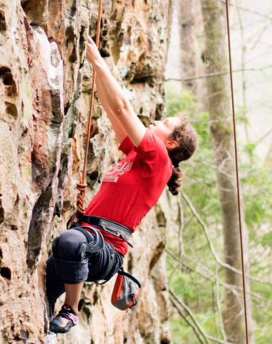
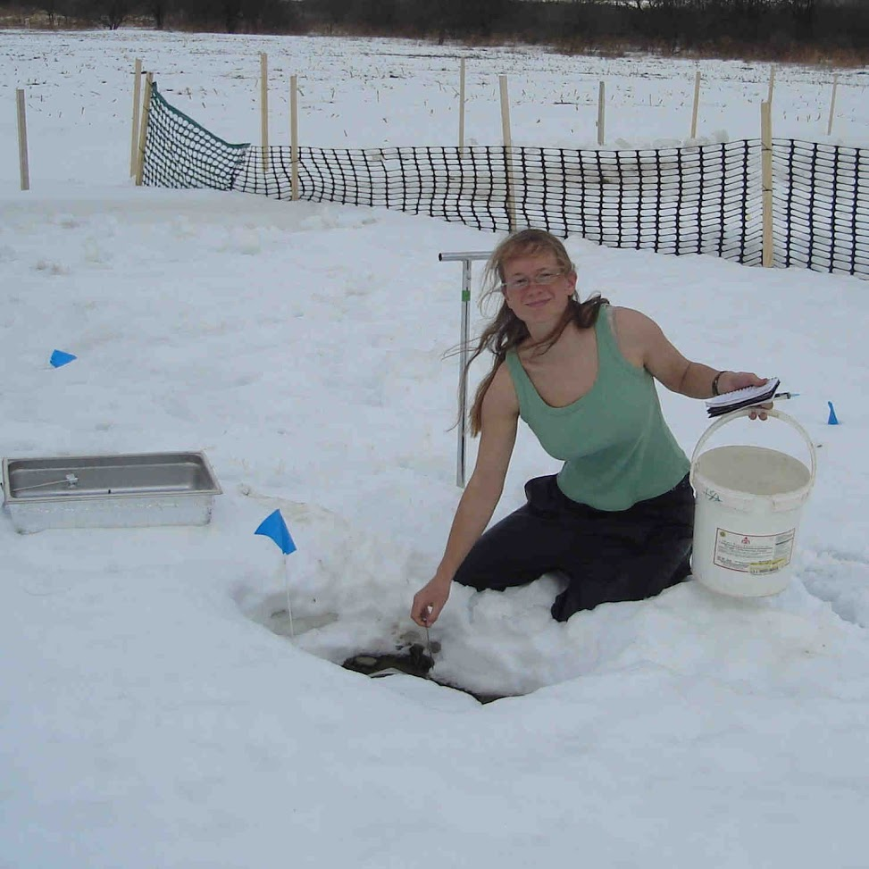
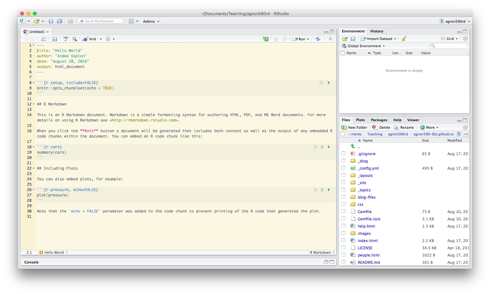

Welcome to Data Stewardship for Earth Systems Scientists
Who are we?
Andee Kaplan is a PhD Student in Statistics with a history of working with complex data problems. From data warehousing to data science, she has spent the last seven years mastering the technology and skills necessary to store and analyze data in a reproducible way. She likes struggling with JavaScript and learning new languages, R being her first love.

Who are we?
Ranae Dietzel is a Postdoc in Agronomy in the Integrated Cropping Systems Lab. I have a Master’s in Soil Ecology from Cornell University where I studied the effects of freeze-thaw cycles on nitrous oxide emission and a PhD in Crop Production and Physiology and Sustainable Agriculture here at ISU where I studied differences in carbon dynamics between corn and prairie cropping systems. It’s been 10 years since I started grad school and began my relationship with Data.

You can make a horse drink

But there are better ways to treat a horse

A few reasons data stewardship is important
- A solid data management plan is now required by federal agencies (NSF, NIFA)
- Includes requirements for data storage, preservation, sharing, and public access
- Good stewardship will make you more efficient, faster, and powerful
- Be kind to your future self
- The most will be made of data that took a lot of time and money to collect
How to be a good data steward
- Work in a style that encourages others to understand and reproduce what you did
- Document every step of the process
- Do not misplace or destroy your data
Many of us need new skills to be better stewards. Some of us need a lifestyle change.
Learning curve and time
- Learning new skills is not easy
- open mind
- patience
- determination
- committment
- Invest time now to save time later
What we will learn in this course
- Tools needed for collaborative workflow
- How to create good data
- How to structure and store data
- Tools and theories needed to efficiently work with data
- Data visualization
- How to make a reproducible and dynamic workflow
- How to get more data and work with special cases
Live in new worlds, but visit the old

RStudio and Rmarkdown
We won’t be learning R until the middle of the semester, but we will be using RStudio and Rmarkdown starting today!

We will use Rmarkdown to write all documents (including homework, blog posts, and grocery lists) this semester.
Class policy
Every time you feel the urge to open Microsoft Word in the class, don’t.

Rmarkdown
R Markdown documents are fully reproducible and support dozens of static and dynamic output formats.

Basics
For now, we will focus on the “markdown” part of Rmarkdown. cheatsheet
*italic*
**bold**
# Header 1
## Header 2
### Header 3
- List item 1
- List item 2
- item 2a
- item 2b
1. Numbered list item 1
1. Numbered list item 2
- item 2a
- item 2b

Your turn

-
Open up RStudio
-
Create a new Rmarkdown document (
File > New File > R Markdown)
-
Edit it in some way.
-
Try adding bold, italics, different headers, images, links, lists, etc.
-
Compile (
Knit)
-
Try compiling to a different format.